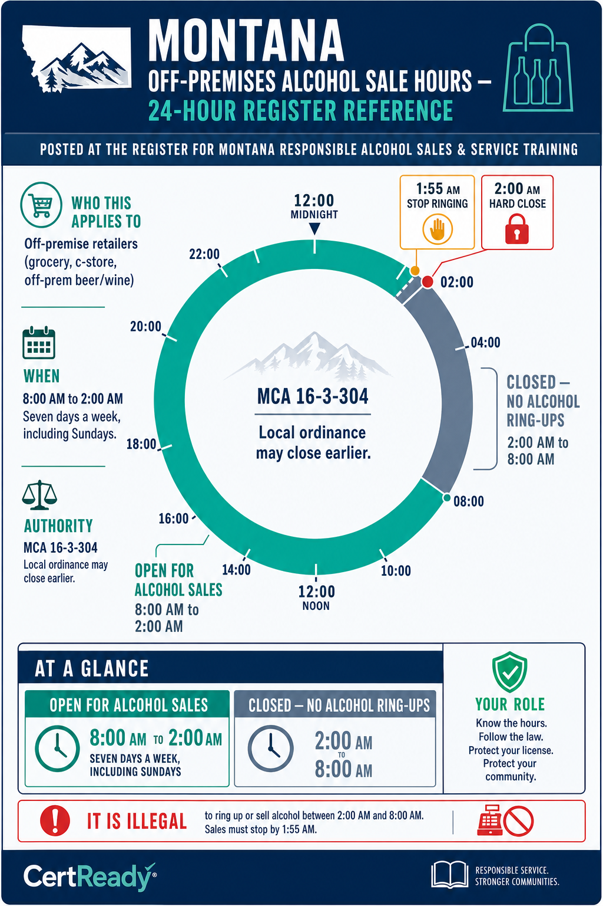

Hours, Sealed Containers, and the HB 211 Delivery Overlay
MCA 16-3-304 sale hours; sealed-container takeout; HB 211 delivery for off-premise retail
What you'll learn
- K9: Hours of sale and sealed-container rules
- K10: HB 211 third-party delivery overlay for off-premise retailers
- P5: Apply hours and sealed-container rules
Module Overview
Same learner-facing video and podcast support as the CertReady course preview.
Video Review
HB 211 Third-Party Delivery: What Off-Prem Retailers Need to Know
Podcast Overview
Montana Alcohol Sales Laws and Liability
The media reinforces the lesson. The full module content below is the required training material.
MCA 16-3-304: Off-premise retailers (grocery, c-store, off-prem beer/wine) may sell from 8 a.m. to 2 a.m. seven days a week, including Sundays. Local ordinances may impose stricter hours; follow whichever rule applies at your location.

What you can sell, and where
- Beer and table wine at grocery stores and c-stores — where 'table wine' is wine containing less than 16% ABV
- Hard cider and hard seltzer may be sold only if they fall within the licensee's authorized beer/table-wine product categories. Some ready-to-drink (RTD) cocktails are spirits-based and may NOT be sold by a standard off-premises beer/wine retailer. Follow your store's approved product list and manager guidance.
- Distilled spirits off-premise are sold ONLY at agency liquor stores (state-contracted retailers) per MCA 16-2-101
- Agency liquor stores have required minimum hours Tuesday–Saturday and optional Sunday/Monday/holiday hours
The 2 a.m. close in practice. • Alcohol cannot be rung up after 2:00 a.m. — once the clock strikes 2, no more alcohol on receipts. • Customers in line at 1:59 can be served, but the alcohol transaction must complete before 2:00. • If the transaction is not complete before 2:00, remove the alcohol from the sale. • Practical: stop ringing alcohol at 1:55 to give yourself a buffer. Local ordinances may require earlier close in some Montana cities. Know your local rule.
Off-premise sales are sealed-container only. The customer leaves with an unopened bottle, can, growler, or pre-packaged unit. You cannot fill a personal flask, cup, or open container at the register.
The customer also cannot consume on the premises — that would require an on-premise license.
Sealed-container rules
- Bottles, cans, kegs, six-packs, 12-packs, cases — all sealed at the manufacturer or distributor. Standard product, no issues.
- Growlers and crowlers are allowed only if the licensee is specifically authorized to fill and sell them and follows Montana sealing, labeling, and packaging rules. If your store does not have a program approved by management for growler/crowler fills, do not fill personal containers or open containers.
- Customer's own flask/cup — never. You don't fill personal containers at an off-premise license, even if the customer asks nicely.
- Tasting samples are not allowed unless the licensee has a specific license, endorsement, or authorization for sampling. Do not offer samples unless management has confirmed the activity is lawful.
Montana licensees cannot sell alcohol below the posted price. The posted price is the legal floor.
What's banned at off-premise
- "Two for one" beer or wine specials
- "Buy one get one free" on any alcohol product
- "Free six-pack with a hot dog" or any free-with-purchase combo where the alcohol is the freebie
- "$5 off if you buy 4 cases" unless the discount IS the new posted price for that quantity
- Any alcohol promotion the licensee hasn't confirmed complies with Montana posted-price/advertising/DOR rules
What's typically allowed (verify with licensee). • Posted-price specials — the special price IS the posted price for that hour • Quantity discounts that are properly posted (e.g., "case price = $4 off the per-12-pack price") • Charity-event pricing with documented charity beneficiary Montana alcohol promotions must comply with the posted-price rule, advertising rules, and any DOR/CARD requirements. Do not run BOGOs, free-drink campaigns, or alcohol-included promotions unless the licensee has confirmed the promotion is lawful — and, where required, secured any necessary approval in advance. When in doubt, ask the licensee.
If your store fulfills alcohol orders via DoorDash, Uber Eats, Instacart, or Grubhub, HB 211 (effective January 1, 2026) created a separate licensing and training framework. Off-premises retailers still have compliance responsibilities when fulfilling alcohol orders through a third-party platform — do not assume the platform alone handles every requirement.
Delivery rules to know
- Beer and table wine ONLY. No spirits via third-party delivery
- Driver must be 21+ and hold a valid driver's license. HB 211 also imposes background-check standards (e.g., no recent felony or DUI within a defined lookback period) — confirm current driver-eligibility criteria with CARD before relying on a specific number.
- Delivery hours must fall within the time window allowed by HB 211 and CARD rules. Delivery is tied to the licensed retailer's sales window and may extend briefly after the retailer's sales cutoff — confirm the current rule before relying on a specific minute.
- ID-scanning at delivery (the platform's tech does this; your store's responsibility is to verify the order is properly tagged for alcohol)
- Refuse delivery to intoxicated recipients or unmarked addresses / PO boxes
- Alcohol must be transported separately from the driver's reach during transit (storage rules apply during delivery).
- Drivers complete required training before delivery. Note: this off-premises RASS course is for store cashiers and clerks at licensed retailers, not for third-party delivery drivers. Montana law allows a responsible server and sales training program or a delivery training program before a driver's first alcohol delivery; confirm CARD's current delivery-training expectations before relying on a specific program.
![HB 211 third-party delivery rules card: 6 tiles in a 2×3 grid, each with an icon and short rule — (1) 'Beer + table wine ONLY — no spirits' (bottle-with-X icon), (2) 'Driver 21+ with valid DL + HB 211 background standards' (driver-license icon), (3) 'Delivery hours within HB 211/CARD window' (clock icon), (4) 'ID-scanning at delivery' (scanner icon), (5) 'Refuse intoxicated recipient or PO-box address' (refused-package icon), (6) 'Driver must complete a responsible server/sales or delivery training program before first alcohol delivery' (training-cert icon). Header: 'HB 211 — effective January 1, 2026.' Brand colors. Designed for store-manager reference behind the counter.](../../img/MT-ALCOHOL-OFFSALE-M06-s4-c2.png)
What the store cashier needs to know about HB 211. When you pack a third-party-delivery order: • Confirm the order is alcohol-tagged in the platform's system (so the driver knows to ID-check) • Sealed-container only — no opened or partial packs • No spirits — if the order has spirits, refuse the order in the platform; spirits are not deliverable • Note any unusual order patterns (same address ordering 5 times in a week, requests to deliver to a parking lot) and flag the manager
Scenario 1: The 1:58 a.m. customer. It's 1:58 a.m. on a Friday. A customer walks up with a 12-pack of Bud Light. You haven't yet powered down the alcohol POS.
Scenario 2: The DoorDash spirits order. A DoorDash order comes in for delivery: 12-pack of beer, 2 bags of chips, and a 750mL bottle of vodka. You're packing the order for the driver who's already pulling up.
What 'sealed container' actually means at the register. Off-premise sales must leave the store in manufacturer-sealed packaging — the cap, foil, twist-tie, ring-pull, or vacuum seal applied at the bottling plant must be intact when the customer walks out. A bottle of wine you opened to let a friend taste a sample is no longer sellable in that bottle as off-premise product, even with the cork pushed back in. A growler filled at a brewery and sealed in front of the customer (with the date and contents on the seal) is acceptable in many Montana retail contexts; a growler the customer brings back from home and asks you to fill is not.
A six-pack with one can missing because a customer wanted to buy 'just one' is not a sealed package; it is loose product. If you would not feel comfortable explaining the seal to a DOR inspector, do not ring it up.
HB 211 third-party delivery — driver age + product limits. Effective January 1, 2026, Montana permits third-party alcohol delivery for off-premise retailers under HB 211. Two non-negotiable rules apply at the moment of handoff: (1) the delivery driver must be 21 or older, and (2) only beer and table wine may be delivered through a third-party service — no spirits, regardless of the order amount or the customer's age. At the door, the driver must perform an ID check (the same ARM 42.13.902 list applies) and refuse delivery if the recipient is under 21 or apparently under the influence. From the off-premise retailer's perspective, the practical hand-off rule is that the retailer is on the hook for the third-party platform's compliance even after the product leaves the store: a delivery violation tied to your inventory can still appear on your licensee record under the same progressive-penalty framework.
Train cashiers who pack delivery orders to spot the 'beer and table wine only' rule and refuse to pack any spirits for a third-party order.
Module 6 Quiz
Reviewer view shows the questions and correct answers immediately so you can evaluate the assessment content without submitting attempts.
Off-premise alcohol sale hours under MCA 16-3-304:
Off-premise retailers can let customers consume the alcohol on the store premises.
Third-party alcohol delivery in Montana may include:
Where do you go in Montana to buy distilled spirits off-premise?
Montana lets a c-store run a 'two cans for the price of one' beer promotion.
What is a practical store-policy cutoff to avoid an after-hours alcohol sale at 2:00 a.m.?
A DoorDash order from your store includes a 750mL bottle of vodka. The right call is:
Name two HB 211 third-party delivery rules that off-premise retailers must follow.